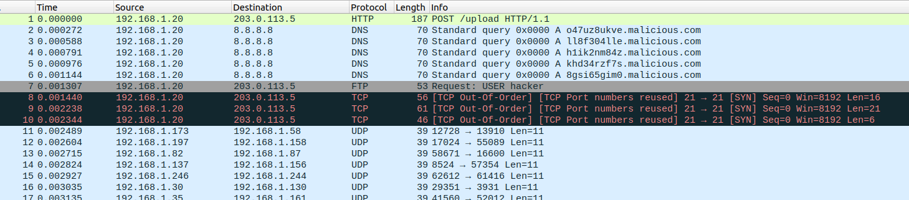
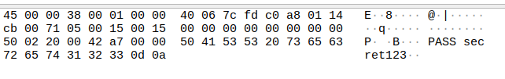
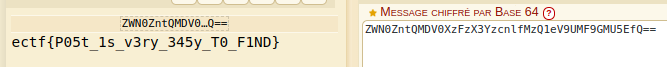

Step 1: Opening the ZIP File Link to heading
The challenge provides a ZIP file containing a PCAP file.
Objective: Analyze the PCAP to identify data exfiltration and retrieve the flag.
Step 2: Initial PCAP Analysis Link to heading
I opened the PCAP file with Wireshark and began analyzing the packets.
Main observations:
- Evidence of data exfiltration within network traffic.
- Interesting endpoints used for file transfer.
- A suspicious POST request.

Step 3: Detecting Hidden Files Link to heading
Inspecting packets individually, I noticed a reference to a file within an HTTP packet.
What I found: 🔹 A file named hidden_file.txt
🔹 A plaintext password!

Step 4: Data Exfiltration Link to heading
Digging deeper, I found a suspicious POST request.

POST Analysis
- It contained a “data” field that appeared to be a Base64-encoded string.
- I extracted this data and attempted to decode it.
Step 5: Extracting the Flag Link to heading
After decoding the Base64 string, I successfully obtained the flag!
Final flag:
